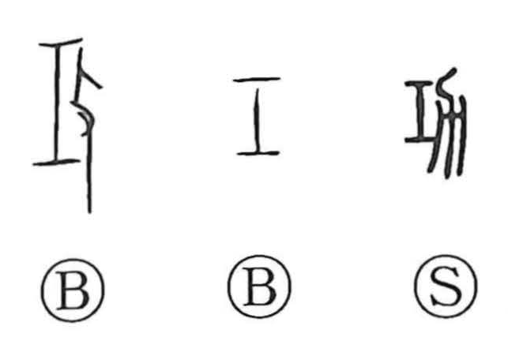

功

Kun: isao | On: kou
merit ・ achievement ・ exploit
Explanation
A phono-semantic character formed from 工 and 力. 工 shows a craftsman’s tool and also supplies the sound, while 力—originally likened to a plow—gives the sense of labor and exertion. The word first referred to agricultural work (nokō), but because 工, as in the expression hyakkō (“a hundred crafts”), does not fix the kind of work, the meaning broadened from farming to all kinds of work and offices, and then to the successful result of work—merit and exploit. In bronze inscriptions 工 and 功 often substitute for each other, and spellings such as 成工 and 戎工 there correspond to later 成功 (“accomplishment”) and 戎功 (“military merit”).